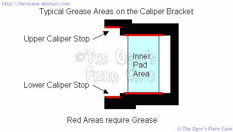
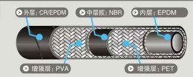
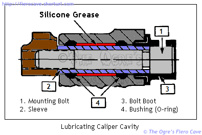

Go Home
Site Map
Go Home
Site Map
If it ain't broke don't fix it.
Fiero brake system info
Warning! Be aware that Asbestos is still used in many brake products. Avoid buying products that contain asbestos. Products that are "asbestos free" may still contain hazardous materials. Avoid any cleaning method that puts brake (or clutch) dust into the air. Don't vacuum clean it either. Most vacuum cleaners are not safe for this work and could contaminate a huge area with hazardous dust.
Any Parts, Seals, Washers, etc, are missing? You must replace the missing part(s) before any work is done, especially on rear caliper, including fixing Parking Brake or adjusting pad clearance. Any missing part will cause problems.
Front Bearing Note: See Front Bearings article. Tips, Warning, etc, are in there...
Cleaning & Lubrication
Warning! Use Only high temperature silicone or synthetic grease made specifically for brake work. Never use petroleum based products. Oil based grease can damage brake parts in a number of ways. Don't get sloppy with the grease! A little goes a long way.
Don't use petroleum-based solvents or Gasoline to clean brake parts! These will leave a residue on them that will cause problems. Use one of the commercial brake cleaning products, "Simple Green" and water, "Citri Solv" and water, or alcohol.
Did he say soap and water? Yup. Soap and water for cleaning a big item like a rotor is hard to beat. It's cheap and doesn't stink. It's not nearly as toxic as commercial brake cleaners. I've found I can clean the coating off new rotors much faster in the kitchen sink than with any other method. The only thing to watch out for is your soap choice. The two I mentioned above won't leave any residue. Others will work as well. Most Dish soap should be fine.
Out on the wheels, anywhere 2 parts of the brake system touch must be clean. Dirt and corrosion in contact points are major sources of brake problems. Some areas also need to be greased. Make sure you only grease the areas that are supposed to be greased. If you botch this, you hope all that happens is some annoying noise. Binding parts can cause noise, warped rotors, worn pads, brake fade, brake failure, and reduced gas mileage.
Whenever the caliper is off the bracket, the bolt holes and all the bracket contact areas must be checked cleaned and greased as needed. Failure to do this is a major cause of brake problems. It's even more important in high salt areas that promote corrosion of exposed parts. (In those areas the brakes should be cleaned and greased at least once a year to prevent problems.)
When you grease the slide bolts, coat the entire inside of the bolt holes in the caliper. (More on sliders? See hardware.) Don't forget to grease the contact points where the caliper and inner pad contact the bracket. The grease provides lubricant but mainly it prevents rust buildup that can bind the caliper and pads. You only need a thin film of grease on the bracket areas. If you use too much, it can get on the rotor or pads and cause trouble.

Brake Pedal
The brake pedal hardware needs little maintenance other than an occasional dab of grease in the MC push rod eye. Here's some stuff about the pedal if you need it. It tells you what to lube and what not to. Also includes the measured pedal ratio.
Master Cylinder
Warning! Never poke anything into openings in the MC. Most openings are calibrated passages that are easily damaged or plugged by foreign objects. Damaged openings could cut into seals and cause brake failure.
Note: The Quick Take-up valve will open anytime flow is too fast for rear circuit to take fluid flow, like bleeding, etc. It's normal to see a geyser in the rear section of the reserve tank. Keep the tank close when you are doing bleeding work.
Here's how the MC and it's Quick Take-up valve works
Check the gasket on the MC lid every time you open it. If the gasket shows any damage at all replace it. You should also consider flushing the brake system because any damage to this gasket usually means you have really wet brake fluid.
For some time now service people have been told to open bleeder screws when compressing the calipers on ABS equipped cars. You need to do this for ALL GM vehicles with "Step Bore" AKA "Quick Take-up" master cylinders. (Failing to do this on ABS can cause errors in the ABS computer.) All stock Fieros have this type master cylinder.
Like ABS, the Quick Take-up master cylinder has several very small passages inside it that could be blocked by debris stirred up by caliper compression. The Flow Valve above the primary (rear) piston on the MC is especially susceptible to dirt problems. If you can't open the bleeder screws, compress the caliper very slowly to avoid plugging the passages in the flow valve.
When cleaning out the tank during a fluid change avoid stirring up dirt. Suck out the fluid slowly from the bottom of the MC opening. This will help draw in loose material on top of the MC. Once the fluid is drained, wipe out the dirt in the bottom of the tank with a soft rag that will trap the dirt so it can't fall into the MC opening.
Power Brake Booster
Do not use strong chemicals/solvents on the Booster or the Check Valve. That can damage the rubber and plastic parts.
See How Power Brakes Work at howstuffworks gives you a basic overveiw. Fiero uses a Tandem/Dual Diaphragm design not covered in that article.
A Good Check valve and booster will stay sealed and keep vacuum level for days to weeks but a Worn or Dirty check valve can hurt or kill the booster performance. Why? Very short version: Booster needs ~17in Hg or more vacuum to work but Engine vacuum is low when you hit the gas. The valve keeps the vacuum inside of the booster when Engine vacuum is low or when the engine dies for any reason. This is why you can use the brakes 2 to 3 times when the engine dies on the highway. After that you're fighting the booster spring to make brake pressure. (Cruise Control and other vacuum operated items have check valves too.)
If you think the booster is bad, Look for vacuum leaks first then Cheap and easy to replace the check valve. Vacuum leaks can often cause engine high idle problems but not always because a pinhole vac leak is a big problem for the booster but engine often won't notice small leaks. Booster control valve or diaphragm problems can make noise all the time that the pedal is pushed. (Is Common to have some noise when pushing the pedal to apply the brakes.) If 1 Diaphragm is bad then you could hear noise and have much more pedal effort then normal.
Check Valve Parts
Note: The booster vacuum line change size for 87-88 Fiero, 84-86 use 3/8in and 87-88 use 1/2in, and check valve change numbers as a result.
22P book and others do not cover this change and many catalogs are wrong for 87-88 cars. Same issue for Radiator caps... 22P is wrong then most other catalogs are wrong too.
Dorman 80190/80189 and RAYBESTOS CV89000 fits 3/8in hose for 84-86 Fiero
ACDELCO Part # 1791266 (179-1266) fits 1/2in hose for 87-88 Fiero (ACdelco.com and search for number, 179-1266)
Power Booster's Filter
Notes:
- GM deleted the filter and used bigger vacuum line for 87-88 Fiero. Many now just bypass it with metal tube for older cars.
- Metal case filter was dropped from GM years ago. Most filter cases are made of Plastic and many have problem using them in Fiero because plastic can melt. Very easy w/ V6 because of exhaust manifold. Dorman filter needs to move away from exhaust, try use a heat shield. Cut the top and bottom of a can to make a heat shield.
- Dorman filter is not a direct fit vs. OE filter. One side is a 90° bend. Make sure the hose going to that end does not kink or you will have booster problems.
- If you bypass the filter then make sure then steel tube to front is clean. That tube could have big rust flakes that can come loose and inhaled by the engine. Maybe flush it with water would help. Don't flush the Booster! Only the vac line between filter and booster.
84-86 Fiero have a filter in the booster vacuum line and looks like a Small can in Booster's vacuum line, bolted to firewall. If the filter is blocked, it will cause problems with the brake booster. Upgrade Booster? Check/replace the filter or new booster performance will suffer as well. This filter, or an equivalent to it, can be found in the MotorMite Master Catalog. It may even be on the shelf in some stores.
The main purpose of the filter is to keep crud sucked in thru the booster and loose rust inside the steel line vacuum line from reaching your engine. It's not to protect the booster. (Especially if the line is unplugged from the booster with the engine running.)
Is the Filter needed? Some people would say no and some Fiero came without that. If you have one you should
probably replace or at least check it every 2-5 years. The filter is cheap. It's easy if a bit awkward to install.
Bleeding
The angle at which the Fiero Master Cylinder is mounted can make the system hard to bleed. If you are having trouble getting all the air out then try parking the car nose down or jacking the rear until the MC is level. This is a common problem in GM cars with tipped master cylinders.
The mounting angle makes proper bench bleeding of master cylinders even more important than normal. Leave the bench bleeding stuff on the MC until the last possible second to prevent air from entering. (Pinch/plug the bleeder lines so you can carry the MC with the cover on.)
More about why the MC is such a pain.
Bleed Sequence
The preferred wheel sequence for bleeding is Right Rear, Left Rear, Right Front, and Left Front. Source: 87 FSM, page BRAKES 5-9
Pedal Bleeding
Avoid uses this method.
Pedal bleeding use someone to push the pedal to bleed the system. Pedal Bleed is a real problem... It drives the Master Cylinder out of its normal travel. It can make the secondary piston in the Master Cylinder to jam in crap of the MC bore. Bad for brakes about half the time and MC replace is only option.
Worse... MC doesn't immediate fail but waits a day to a month to give up and has no brakes at stop sign etc because the trash gets loose and takes awale to work on a seal. Doing a brake job and a week/month later need a MC? This is likely why.
See why "Pedal Bleeding" is bad for MC.
Better Option: Gravity Bleeding, "Power" Bleeding, or Vacuum Bleeding.
- Gravity Bleeding is just that. Open bleed valve and watch it drain. Can take a long time.
- Power Bleeding uses air pressure. Use search in the forum.
- Vacuum Bleeding uses a vacuum pump. Small hand held vacuum pump are very cheap. $20 - $40 most stores have it. Harbor Freight has two example... Use search, keyword: vacuum.
Bleeder Removal & Repair
If the Bleeders open, check them for any damage. Replace them while you have the chance.
If they won't open you're in for a fun time. Not! In cast iron calipers, you can often heat the caliper to free a stuck bleeder screw. This is difficult on aluminum for two reasons.
- Aluminum conducts heat much faster than cast iron. This can make it impossible to get enough heat to release the screw without damaging the caliper. You could need to rebuild the caliper if you try this.
- The steel bleeder and Aluminum often develop galvanic corrosion similar to marine applications. This form of corrosion can effectively weld the 2 parts together and make them impossible to separate by any method.
More often than not, the screw will break off. When that happens, you are going to have to drill it out and install an over size bleeder or a repair bleeder. An over size bleeder screw works well if you can get a good seat for the seal. That can be much trickier than you think. (As big as the stock bleeders are, there may not be oversize ones to replace them.)
A repair bleeder has an insert for the caliper and a new screw. You drill and tap the hole, install the insert and new screw. Then you treat the caliper as normal. These cost more than an over size bleeder but they save you having to fight with the bleeder seat. You also get new threads in the calipers that are unlikely to strip. Don't forget to put some thread locker, preferably the permanent kind, on the outside of the insert before you install it. Don't get any thread lock on the bleeder or inside the insert.
Two sources of bleeder repair kits are Thexton and MotorMite. Since you are making a new bleeder hole, it doesn't matter that they aren't metric.
Preventing bleeder seizure
Here are a few things you can do to prevent the bleeder screws from seizing in the caliper. (Do this any time a bleeder is opened or replaced.)
- Before you flush or bleed... Remove the bleeder and coat it with anti-seize compound. Coat all the bleeder threads. Screw it in finger tight then wipe away any excess. (Don't do this to bleeders that came with thread coating on them. Some of the "one man" bleeder screws are like that.) For best results do this before you install new calipers. (or at least before you start bleeding new ones.) Don't get sloppy with the compound or you could contaminate the brake fluid. Some people say they have good luck with Teflon tape on the bleeder threads. (Tape also helps seal loose screws for easier bleeding with a vacuum tool.)
- After bleeding blow out the bleeder as best you can. This gets the excess fluid out to prevent corrosion.
- CAP the bleeder to keep out dirt and water. Part of the cause of bleeder freeze is crud getting down the bleeder and corroding the hole from the inside. If you have "one man" bleeders installed the caps will prevent damage to the check valve and spring found in this type screw. Any small plastic or rubber cap that stays tight will do.
One solution for bleeder caps is to harvest some on one of your trips to a scrap yard. (Look for Grand Am and similar GM cars. Those front bleeders came capped from the factory.) Some cars have captive caps with little leashes that keep them from getting lost while you are working on them.
Brake Fluid
The DOT 3 brake fluid has an affection for water and needs periodic changing. Just how often depends on a few things but every 2 years is probably a good maximum.
I'm not going to cover the specifics of changing the fluid here. Most people's bleeder screws are frozen so this isn't likely to happen on most cars. Just keep in mind that if you think you have brake fade problems then your first step should be a complete fluid change. (Ok, I caved. Flushing tips are farther down the page.)
The fluid should always be changed anytime a caliper or MC is removed or replaced. Crud in the old fluid can ruin new parts in short order. Crud that was stuck inside of parts can be knocked loose. Changing the fluid will help get the junk out. (It usually takes me a quart, sometimes more, to flush all the junk from the system.)
A thing I like to do is to purge the lines with fresh fluid before installing new calipers. This gets all the garbage out of the lines before the new parts are on so that none of it ends up in the new part. If I'm only changing an MC I bleed until I get new fluid from each wheel. That gets rid of the majority of crud.
No, I don't recommend Silicone fluids on street driven cars. DOT3 will work just fine in a system that is working properly. Silicone "DOT5" fluids have problems of their own. For best results use one of the newer high temperature DOT3 formulas.
For much more information about this, read the Brake Fluid article. It cover's issues about fluid choices in detail.
Brake Hoses
OE types are made to go one way w/o any guessing and newer SAE J1401 hose are far better than factory hoses. (Hoses are label with DOT 106 and SAE J1401.)
New OE Type hoses should meet SAE J1401. J1401 hose is a "new" item. SAE published the standard in 1999 and updated since. Most Products show up ~2005 and up. You can find parts without J1401 hose but don't buy them. (Raybestos PG Plus and others use J1401 hose.)
J1401 has 5 layers vs old hose that use 3 layers... typical example:

Soure: www.strongflex.com
Google: sae j1401
Rubber vs Stainless Steel brake hoses
I never liked stainless steel. SS had some points on rubber but have many problems too. DOT "approved" help but not much. Then SAE publish J1401 and most SS benefits went away.
Old rubber hose could expand enough to be notice at the brake pedal (Most old hoses are built as "Regular expansion hose.") but J1401 Expansion is 1/2 or less than "Low Expansion Hose," 0.13 cc vs. 0.33 cc per foot of line at 1000PSI. Burst Pressure? Most Street cars use ~1800PSI max, normal Working pressure 200-900PSI. FMVSS burst test is 4000PSI. (See S5.3.2 Expansion and burst strength in FMVSS 106 via Link page.)
Many SS use Clear jacket cover to meet FMVSS rules. Many SS owners report problem w/ cover turning color, cracking, etc. in 1-3 years. Maybe they use Open design rims that let more UV light get at the lines. Once cover is cracked/done then dirt etc can attack the inner liner. Teflon is mostly chemical inert but easy fail for abrasion. Dirt salt etc. can get thru the SS when wet then dry out and become micro saws. Any cracking then throw it away fast.
The shape on OE caliper end acts like a lock washer... Square end hits the shoulder on the caliper. Most SS hoses use universal banjo ends that can work/vibrate loose over time or even pulling hose can loosen the banjo, especially used on aluminum calipers and low Torque spec on banjo bolts.
More see rubber brake lines vs stainless steel
Caliper Hardware
Contrary to popular belief the slide bolts used in 84-87 calipers DO NOT carry significant brake load during stopping. The purpose of the slide bolts is to guide the caliper and keep it floating smoothly in the bracket. The load from the pads is transmitted to the caliper bracket by other paths. (This is true of all GM calipers with this style slide bolt.)
The inner pad transfers load to the caliper bracket directly. This prevents side loading of the piston that could jam the caliper or cause a leak. Remember to test fit the inner pad in the bracket. Make sure it's not binding. If it is, scrape off the paint of the top and bottom edge of the pad backing plate and retry it. The paint can be thick enough to bind the pad.
The outer pad load is transmitted through the caliper to stops on the bracket above and below the caliper. At rest the caliper floats free between the stops, resting on the rubber bushings in the slide bolt holes.
Sliders
Slider looks like a "misnomer." Normally, the Slider should be hard to slide when you do it, like it's stuck, but is easy for the caliber to slide at brake pressure. Just lube the sleeve? It's easy now but gives it a week and act like it's stuck. Don't worry about it. But Note, make sure it's not really stuck because it was installed with no lube and cause corrosion.
The O-rings has three jobs... O-ring is a bushing, seal, and spring. Bushing is obvious... Seal because it keep lube in and water out. Spring? Yes. The Outboard Pad return spring. Very small return, a couple Thousands of an inch, but if it doesn't to that then the rotor will overheat and fail.

Source: GM 22P b/w image. Ogre clean up and added color.
Lube sleeve and cavity with brake grease. OK to liberally apply the grease between the bushings. Use a thin coating of grease in the caliper cavity outside of the bushing and under boot to keep it from corroding.
Banjo bolt
Warning: Using wrong washers can cause leaks. Washers are a one shot use item. Get new ones every time the bolts are removed.
New banjo washers use Dorman Part # 484-180 484-180.1 or 66223 at most parts stores. (# is same part but # means package box, bagged, or blister pack.)
Torque the bolts to 31 ftlb (42 N-m), front or rear.
Rebuilding
I've been asked many times about rebuilding brake parts. Here's my list.
Before you even consider rebuilding the calipers, make sure the bleeder screws will open. If they will not open, or break off, then forget it.
Front
These are easy to rebuild. As long as the pistons are in good shape then go for it.
BTW, The Phenolic pistons are actually better than steel ones. They provide a better sealing surface and don't conduct heat like steel. If you have these, don't replace them unless they are damaged.
Phenolic vs. Steel pistons
Is a famous Myth that Phenolic pistons = Junk. Some real facts:
- Phenolic does not swell from brake fluid or much else. Does have different thermal properties, like resistance from pad heating (less fluid heat) and expands different when hot.Phenolic does not swell from brake fluid or much else. Does have different thermal properties, like resistance from pad heating resulting less fluid heating and expands different when hot vs. steel.
- GM never used metal pistons for Fiero front and many others. That is an aftermarket item.
See:
Tech note for Midas shops (PDF)
Rear
Note! There is a seal inside the piston that cannot be repaired! If the pistons are leaking fluid thru the vent plug/hole then the piston must be replaced.
I do not recommend DIY rear calipers because:
- Most don't know if the piston is good or not. (Besides obvious inner piston leaking.) Most pistons are bad and GM made the piston as a one time use only part. Even GM dealers weren't able to get any piston parts. (22P or TSB list only rear piston assembly.)
- There are some doc's online says to take apart rear piston... Bad idea. If not leaking now then it will and likely soon. Most Rebuilders have problems and they have good tools.
Rebuild rear calipers has a history of messing up. I strongly suggest you get rebuild rear caliper at a Local store. If online story as any kind of problem... ship back, wait, see if next one is good, No? Ship back again, etc...
Master Cylinder
I've been looking into this one for a while. The little information I can find of the automotive trade publications indicates that aluminum master cylinders should not be rebuilt. There are 3 main reasons given:
- It's extremely difficult to obtain the correct surface finish with the equipment available to the public. Improper surface finish will ruin the seals in short order.
- Most, if not all, Aluminum master cylinders have anodized coatings that cannot be duplicated without very expensive equipment. This coating prevents corrosion of the MC bore(s). Any honing of such MC's will destroy these coatings.
- With Step Bore MC's you've also got to mess with the flow valve in the primary circuit. The smallest problem with this valve can leave you with poor or no brakes.
System Flushing tips
Normally, I'd flush when I'm replacing a Master Cylinder or Caliper to prevent damage to the new parts. Flushing a system without rebuilding or replacing anything is a pain but it is doable. You won't get all the old fluid but you'll get enough to make a difference and it's usually worth the effort. In an OE Fiero, the front brakes will benefit more than the rear.
Always flush the MC and brake lines any time a caliper is disconnected. If you are replacing the flex lines, take the caliper off and dump the old fluid out. If you are replacing a caliper, purge the lines before connecting the new one. It is allot easier to fill an empty caliper than flush it. It also protects new parts from residual trash.
You do have to be careful. If your system is in bad shape, you can shake up trash that can bind a piston or eat a seal. Of course, if your system is in bad shape you probably can't open the bleeder screws anyway....
Will flushing get all the old fluid?
No. You'll always leave some behind unless you are rebuilding the system. The new fluid will be degraded some by the old fluid but it is still worth the effort to flush the system. (Fiero's OE rear brakes, like most OE rear disks, are difficult to flush even on a good day.)
The new fluid will bring in fresh corrosion inhibitors and lubricants. This will prevent damage from remaining moisture. With each flush, you'll preserve life of brake components. (This is especially true of vehicles with ABS. A failed ABS unit can cost hundreds of dollars to replace.)
If you use a fluid with a high Wet boiling temperature, like you should be, then any moisture that wasn't flushed won't be as much of a problem.
For street applications, if the system has never been flushed before, consider doing an extra flush in 6 to 9 months. This "short" interval will help draw out the old fluid and eliminate it. After that you should be allot closer to fluid operating on its dry boiling temperature. (Racers should be rebuilding/upgrading the system, work that will include a total fluid flush.)
You have to be very careful if you flush an ABS system. If you do this wrong, you can cause the ABS computer to shut down the system. I mention this because I know some of you have other cars with this installed. Make sure you follow manufacturer's bleeding instructions to the letter.
How Much Fluid Will I need?
Expect to use a quart or more for each axle depending on just how you do them.
The rear axle will use less fluid if you drain and refill the calipers instead of trying to flush them clean. These things hold much more fluid than the front.
Master Cylinder
Pull the old crud out with a "turkey baster" and use a CLEAN soft rag to carefully wipe up the bottom of the tank. (Select a rag that won't dump lint in the MC!) Don't try to pull every drop from the MC openings! You don't want air to get in there.
When you pour in the new fluid, go slowly and don't pour directly into the MC openings in the tank bottom. Again, this is to avoid getting air into the MC.
Front
Open the bleeders then compress the front pistons. This will force out most of the fluid in them. Leave the bleeders open until new fluid flows from them. (I usually just gravity bleed them but if you are in a hurry use a vacuum set.)
Close the bleeders and slowly pump up the calipers with the new fluid.
This should remove the bulk of old fluid but if the old fluid was really trashed or you are planning to race then do this a few more times.
Rear
Fiero OE Rear calipers are difficult to flush. Even with the pistons compressed, they will hold significant fluid. Since rear calipers don't usually receive the heat that front ones get, you'll have to decide just how much effort you want to spend on them. If the fluid were old, especially more than a couple years, I'd do it. (Don't take off the banjo bolt unless you really have to. You'll have to replace the seals and the thing strips very easily.)
You can try using the same method as the front but I think you'd have to pump them out several times to get enough new fluid to matter. As many people know, retracting rear pistons is a pain. Doing it more then really needed could damage the seals. I wouldn't do it this way.
To keep fluid from running out of the MC while you drain the rear calipers, drop a patch of rubber or soft plastic into the bottom of the MC tank. Set a CLEAN weight on it if need be. (Clean the stuff with brake parts cleaner! This will help anytime you need to open/remove a caliper and don't want the MC to go dry.) Use a small enough weight that you can put the cover back on the MC while you mess with the calipers.
Here are a few ideas I've been playing with. (I'm not in a big hurry to mess with these...)
You can try dismounting the caliper, removing the bleeders and draining them. Wiggling the E brake arm might help get them started draining.
If it won't drain, you could try to use a syringe to push air into the bleeder hole. The trick would be to find a tube thin enough to fit through the bleeder hole and not block it completely. The tube has to reach all the way inside the caliper so air will go in and allow the fluid out.
It may also be possible to suck out the fluid through the bleeder using a syringe or a vacuum bleeder set. Don't try to reach all the way to the bottom or you'll suck in stuff that will probably block the tube. If this works, it would save having to take the caliper off the bracket.
What makes the rears even more difficult is that many of them have bleeder repair sets installed. The repair sets usually have smaller openings than normal ones. In this case, you may never get them flushed without disassembling them.
Links
Brake Rotor Service specifications in PDF format. Covers all Fiero Plus Grand Am rotors. (In IE, right click the link and select "Save Target As" for easier download to disk.)
How Brakes Work from howstuffworks.com. This interesting article explains the major components and includes a number of useful animations. It even covers vacuum booster operation. Includes plenty of links to more info. (Flash required. Click red arrows to activate animations.)
There are more links in the Brake Fluid and Brake Upgrade articles.